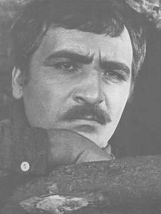
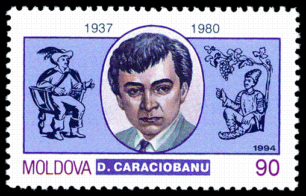

Карачобану Думитру Савельевич

Думитру Савельевич Карачобану (рум. Dumitru Caraciobanu; 22 апреля 1937, с. Новосельское Кагульского жудеца Бессарабия Королевство Румыния (ныне Ренийский район Одесской области Украины) — 1980 (14) ноября, Кишинев) — молдавский советский актер театра и кино. Заслуженный артист Молдавской ССР (1967). Лауреат Государственной премии Молдавской ССР (1978).
Биография
В 1955—1960 обучался в Высшем театральном училище им. Б. В. Щукина в Москве.
С 1960 года — актёр кишиневского театра «Лучафэрул». Сыграл более 60 главных ролей в разных спектаклях. Хара́ктерный актер, обладавший непринужденной манерой игры и пародийным талантом.
Роли в театре
Исполнил ряд запоминающихся ролей:
- Арган в «Мнимом больном» Мольера
- Манолаке в «Las 'că-i bine» Анны Лупан
- Кочкарев в «Женитьбе» Н. Гоголя
- сэр Тоби в «Двенадцатой ночи» В. Шекспира
- Жодле в «Жодле, или Слуга-господин» П. Скаррона
- Победоносиков в «Бане» В. Маяковского
- Кирица в «Кирица в провинции» В. Александри
- Раду Штефан в «Radu Ştefan, întâiul şi ultimul» А. Бусуйок
- Сорин в «Чайке» А. Чехова
- Агаке Цэруш в «Pe un picior de plai» И. Подоляну
- Отец в «Мещанской свадьбе» Б. Брехта
Фильмография
В кино снимался с 1961 года. Актер студии «Молдова-филм»
- 1961 — Человек идёт за солнцем
- 1962 — Горькое лекарство (короткометражный) — Пэкалэ
- 1963 — Ждите нас на рассвете — цыган Фане Фелинар
- 1965 — Последняя ночь — Савва
- 1966 — Красные поляны — Туркулете, старший бригадир колхоза
- 1971 — Лаутары — Преда
- 1971 — Красная метель — Фока Туркулец
- 1972 — Вика, автобус и я (короткометражный) — начальник автостанции
- 1973— Зарубки на память — эпизод
- 1974 — Гнев — Фалкэ
- 1974 — Долгота дня — цыган Чорбэ
- 1974 — Осенние грозы — эпизод
- 1975 — Конь, ружьё и вольный ветер — Окешел
- 1975 — Что человеку надо
- 1976 — Никто вместо тебя — эпизод
- 1977 — Сказание о храбром витязе Фэт-Фрумосе — эпизод
- 1978 — Агент секретной службы — полковник Василаке
- 1979 — Цыган (4-я серия) — директор совхоза
- 1979 — Я хочу петь
- 1980 — У Чертова логова — Махмуд-бей
Память
Одна из кишиневских улиц носит имя Думитру Карачобану (до 1992 года — первый переулок Белинского),
в Бельцах — улица Думитру Карачобану (бывшая улица Байдукова).

Источник